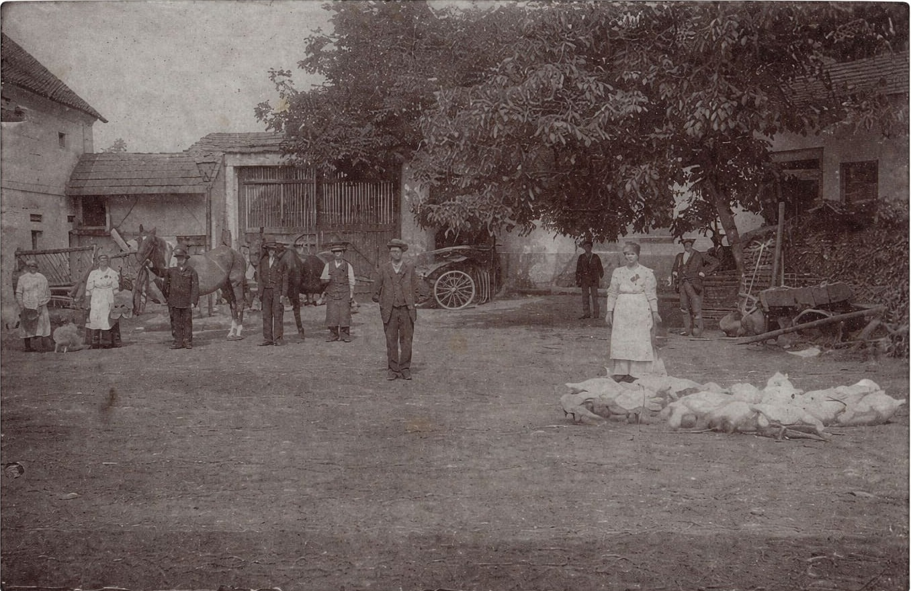

Zemědělská tradice
rodu Černých
Kořeny našeho hospodaření sahají hluboko do historie českého venkova. Dochované kroniky dokládají působení našich předků v zemědělství již v roce 1651. Po staletí se generace naší rodiny věnovaly práci na půdě, rozvoji hospodářství a budování zemědělských usedlostí.
První záznamy v kronikách
Dochované kroniky dokládají působení našich předků v zemědělství již v roce 1651. Tehdy naše rodina začínala s hospodařením na českém venkově — s pokorou k půdě a odhodláním ji předat dalším generacím.
Historie a vývoj
Rod Černých procházel obdobím válek, hospodářských krizí i zásadních společenských změn. Přesto si dokázal uchovat vztah k půdě, pracovitost a schopnost přizpůsobit se nové době. Postupně se hospodaření rozvíjelo od menších gruntů až po rozsáhlejší zemědělské podniky a obchodní aktivity.
inovací
Odvaha modernizovat
Naši předkové patřili mezi hospodáře, kteří se nebáli zavádět nové technologie a moderní postupy v zemědělství. Mechanizace práce, zlepšování půdy a rozšiřování produkce byly přirozenou součástí vývoje rodinného hospodářství. Na tuto tradici dnes navazujeme moderním zpracováním a důrazem na kvalitu surovin.
Specializace na mák
Na produkci modrého máku se naše rodina systematicky zaměřuje od roku 2004. Spojujeme dlouhodobé zkušenosti s moderní technologií čištění a kontrolou kvality — výsledkem jsou stabilní dodávky pro potravinářský průmysl.
Evropský dodavatel
Dnes působíme jako stabilní dodavatel pro potravinářské zpracovatele v České republice i zahraničí. Roční kapacita až 2 000 t, vlastní čisticí linka a export do Polska, Rakouska i dalších zemí — to je výsledek generací poctivé práce.
Navázat spolupráci
Více než 370 let
na jedné půdě
Archivní fotografie zachycuje hospodářství rodu Černých v době, kdy mechanizace teprve začínala měnit tvář českého zemědělství. Lidé na snímku jsou naši předkové — jejich práce položila základy toho, co dnes rozvíjíme dál.